Problem Definition
The current problem involves the implementation of tracking algorithms. Specifically two datasets have been given, the bat dataset and the cell dataset. Multiple objects are present in each frame and have to be tracked. The assumptions we make are that the objects move only slightly between two frames. The anticipated difficulties are implementing a reliable tracking algorithm and obtaining correct segmentation data.
Method and Implementation
Multiple Object Tracking
Alpha-Beta Filtering
For the tracking part, an alpha-beta tracker was implemented. The alpha beta observer is a simplified form of a linear state observer that assumes an object can be described by a model with 2 internal states. This system accounts for both process noise and measurement noise and is a lower order approximation. The two internal states represented by the model are position and velocity. This tracker has a prediction phase where it predicts the position and velocity for this time step using knowledge from the previous time step. In then calculates the residual ( measurement for this time step - prediction) and uses it to update the position and the velocity weighed by the parameters α,β respectively.

Figure 1 : Algorithm summary
For our implementation the equations used were,

Figure 2 : Update equations
The values for α,β itself are hyperparameters. Typically, lower values of α,β reflect more belief on the prediction ( when there is more measurement noise ) and higher values reflect more belief on the measurement (less measurement noise).
All this was the alpha beta tracker for a single object. While extending to multiple objects, the main problem was data association. Also, all of the above parameters had to re-written as matrices and vectors. So all the update operations became vector operations.
- show_frame_wise methods(): ran the tracking. Different other helper functions were created to perform the other tasks.
- create_color_hash(): create the color hash to plot the tracks of the different bats.
- draw_line(): drew the bat tracks on the image.
- update_velocity(): performed the velocity updates.
- update_coords(): performed the position updates
- subtract(): calculate the residual vector
- association(): performed the data association
- distance(): calculated the euclidean distance between two points
- get_x_pred(): predicted the object coordinates of the next time step.
Suboptimal Bipartite Matching Algorithm - Improving Greedy Algorithm
To solve the bipartite matching problem, we initially implemented greedy algorithm to solve it. However, the results were very bad; mostly because it is 'greedy'. As a result, we modified the greedy algorithm to gain better results. I will explain our modifications below:
The traditional bipartite matching problem is - how can we match 2 sets of data together?; in this case, the group of localization points at each frame and the group of objects that are already recognized. Using the greedy algorithm, older objects wiht longer tracking history were matched first. The gating used was a circular gate of 50 px. This was a trade off between recall and precision.
The main problem with the greedy algorithm was most bats (and cells) stay from the first frame onwards, and therefore, there were many objects that had the longest tracking history possible. As a result, the greedy algorithm was not effective in this bat (and cell) dataset because the greedy algorithm tries to match the localization points and objects in a 'greedy' manner. This is very not effective in a bipartite matching algorithm because there might be better matches along the way, but it not looked at yet (because it is greedy).
To solve the problem mentioned above, we implemented a slightly different version of the greedy algorithm. First, every localization point picks the closest (as in predicted position) object. Note that the distance between two objects needs to be less than the gating value (manually defined) in order for the pick to be valid. As you can imagine, it's possible for 2 localization points to pick the same object. In that case, we enforce a 1 to 1 mapping by keeping only the pair of localization point and object with closest distance. The rest of the points are now turned into "zombies". Then, we repeat the localization matching and 1 to 1 mapping step again so the zombies are mapped to localization points as much as possible. Lastly, zombies are converted into new objects.
Handle localization errors - Half Dead
This part tries the fix a problem the object is there but the localization point might be missing in a few frames. In the normal case, the localization of that object will be assigned a new object id because it is considered a new, thus different, object now. We do not want this behavior. We want the algorithm to be able to recognize that this supposedly new object is the same as the previous object. To fix this, our algorithm implements a concept we term "Half Dead".
Half Dead are unmatched objects by the end of the association method. They are 'half dead' because we don't want to discard them yet. We want to see if we can match them in the next n frames. n is a tunable variable; currently set to 5.
Segmentation/Localization
Cell Dataset
>>Type Here<<
Experiments
>>Type Here<<
Results
Handling Missing Localization Points
| 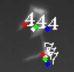 | 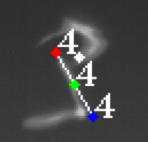 | 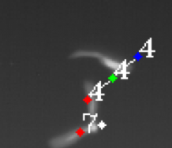 |
| frame n+1 | frame n+2 (missing localization point) | frame n+3 (obj 7 is retrieved) |
As shown in Table 1, we see that in frame n+2, there is a localization error where the localization point for object 7 is not recognized. In order to handle this situation, we implemented the concept of "Half Dead" (explained earlier) to take in account of localization error in a given number of frames to handle situations like this.
Removing unused object track
| 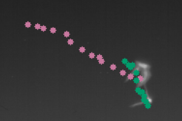 | 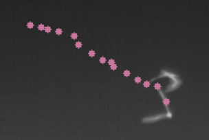 | 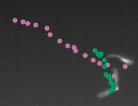 |
| frame n+1 | frame n+2 (missing localization point) | frame n+3 (obj 7 is retrieved) |
Table 2 shows the same frames as Table 1. The only difference is it now shows the track of object throughout the video. Again, we see in frame n+2 that there is a missing localization point for object 7, thus, the algorithm cannot find object 7. As a result, it is considered removed and we remove the track from the current frame. In frame n+3, the missing localization point comes back and we recognize it, and therefore, we implemented a way to bring its track back and display it.
Handling Objects touching and occluding
| 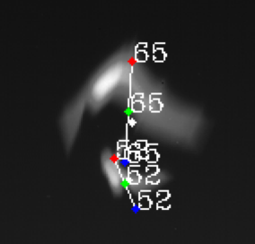 | 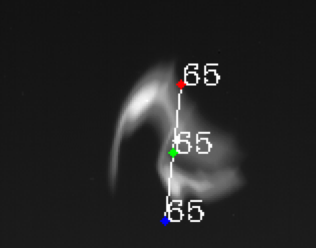 | 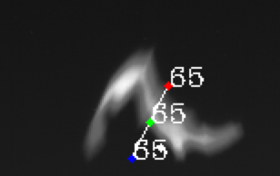 | 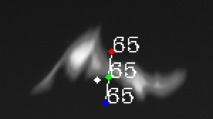 | 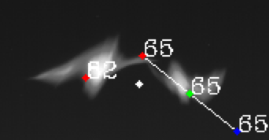 | 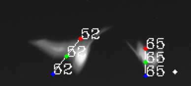 |
| frame n+1 | frame n+2 (Start Occluding) | frame n+3 | frame n+4 | frame n+5 (obj 52 is retrieved) | frame n+6 |
As shown in Table 3, in frame n+1, we see two different objects, 65 and 52. In frames n+2 to n+4, we see that the localization algorithm interpreted the two bats occluding as 1 bat and only provided 1 localization point for it. In frame n+5, the localization point interprets two localization points for each of the two objects and we are able to interpret object 65 and 52 again using our implementation of "Half Dead".
Video Result of Bat Dataset
Video Result of Cell Dataset
Discussion and Conclusion
In this assignment, we:
- Implemented Alpha Beta Tracking
- Improved the greedy algorithm to solve the bipartite matching problem.
- Implemented "Half Dead" to handle localization errors.
- Implemented Kalman filter and Hungarian methods.
We feel that we have achieved a much better algorithm than the initial minimum viable product that we initially created. However, the implementation is not perfect and it is worth taking the time to find better ways to perform segmentation, localization and tracking because these 3 topics have a broad range of applications and is very important.